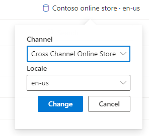

Enable and use cross-channel sharing
This topic describes how to enable and use the cross-channel sharing feature of Microsoft Dynamics 365 Commerce site builder.
Overview
Cross-channel sharing lets retailers reuse and share content among multiple channels of a site. This capability is useful when the site channels have a compatible base language, or when they have numerous content items in common.
Cross-channel sharing works by enabling a default channel that will be searched for available content when a channel-specific version of the requested content isn't found. Content that is intended to be shared among channels is created in the default channel. That content can be localized for any locale that is used on any site channel.
When to use cross-channel sharing
Cross-channel sharing is useful when multiple channels on a single site can share content. For example, a retailer that has multiple brands and storefronts that are grouped under a single site can share some content among some or all of the storefronts. This shared content can include pages for terms and conditions, payment terms, shipment methods, and frequently asked questions (FAQ).
Cross-channel sharing also supports fragments. Therefore, a content page that contains channel-specific fragments can be created as cross-channel content. In this case, although most of the content will be shared among channels, channel-specific fragments on a cross-channel page will be rendered only when they are requested from the corresponding storefront channel.
Sites that have only one channel, or sites that have multiple channels that can't share content, won't benefit from cross-channel sharing.
Enable cross-channel sharing
Cross-channel sharing is enabled at the site level. This operation is one-way. In other words, after cross-channel sharing is enabled, it can't be disabled.
To enable cross-channel sharing in Commerce site builder, follow these steps.
Go to Site settings > Features.
Set the option for the Cross Channel feature to On.

After you enable cross-channel sharing, cross-channel information will appear in the Channels section at Site settings > Features, as the example in the following illustration shows.
Additionally, after you enable cross-channel sharing, the Channel field in the upper right of Commerce site builder will include a Cross Channel Online Store option that you can use to manage cross-channel content, as shown in the following illustration.

Create and use cross-channel content
You can create and use cross-channel content in multiple ways. For example, you can create cross-channel fragments, create cross-channel pages that use cross-channel and channel-specific content, and override cross-channel fragments with channel-specific versions of fragments.
Create a cross-channel fragment
To create a cross-channel fragment in Commerce site builder, follow these steps.
- Go to Fragments, and select New to create a new fragment.
- In the New fragment dialog box, select the Promo banner module, and then, under Fragment name, enter a name (for example, Cross-channel banner). Then select OK.
- In the property pane for the Promo banner module, select Add Message, and then select Message.
- In the Message dialog box, under Text, enter Cross-channel, and the select OK.
- Select Save, select Finish editing to check in the page, and then select Publish to publish it.
This cross-channel fragment can be used on cross-channel or channel-specific pages that are created on any site channel.
Create a cross-channel page that uses cross-channel content
Cross-channel pages can be used on any channel of your site. Therefore, you can create a shared content page one time and make any subsequent updates in a single place. For example, a cross-channel Terms and conditions page that has the URL /toc can be shared among all the channels of a site. If the base URLs for the site channels are www.fabrikam.com/brand1 and www.fabrikam.com/brand2, the same cross-channel, shared Terms and conditions page will be available from both site channel URLs, at www.fabrikam.com/brand1/toc and www.fabrikam.com/brand2/toc, respectively. If the Terms and conditions page must be updated later, you have to update only the single, shared page.
To create a cross-channel page in Commerce site builder that uses cross-channel content, follow these steps.
- Go to Pages, and select New to create a new page.
- In the Choose a template dialog box, select a template, such as Marketing.
- Under Page name, enter a name for the page (for example, Cross-channel page).
- Under Page URL, enter a page URL (for example, examplepage), and then select OK.
- In the Main slot of the new page, select the ellipsis (...), and then select Add fragment.
- In the Add fragment dialog box, select the cross-channel fragment that you created earlier that has a promo banner, and then select OK.
- Select Save, and then select Preview to preview the page. You should see the promo banner that says, "Cross-channel."
- Select Finish editing to check in the page, and then select Publish to publish it.
Create a channel-specific page that uses cross-channel content
By using cross-channel content on channel-specific pages, you can create a shared content fragment one time and then use it on channel-specific pages. This "single sourcing" is useful for shared content such as terms and conditions, payment terms, or contact information.
To create a channel-specific page in Commerce site builder that uses cross-channel content, follow these steps.
- From within a specific channel, such as Fabrikam extended online store, go to Pages, and then select New to create a new page.
- In the Choose a template dialog box, select a template, such as Marketing.
- Under Page name, enter a name for the page (for example, Channel-specific page).
- Under Page URL, enter a page URL (for example, channelspecificpage), and then select OK.
- In the Main slot of the new page, select the ellipsis (...), and then select Add fragment.
- In the Add fragment dialog box, under Channel, select Cross Channel Online Store. The cross-channel fragment that you created earlier should appear in the list. Select it, and then select OK.
- Select Save, and then select Preview to preview the page. You should see the promo banner that says, "Cross-channel."
- Select Finish editing to check in the page, and then select Publish to publish it.
Create a channel-specific version of a cross-channel page
Cross-channel sharing supports overrides of cross-channel content. For example, all but one of your site channels share the same piece of content. That one site channel requires different content. To implement the different content for it, you override the cross-channel content with channel-specific content by creating a channel-specific version of the cross-channel page.
To create a channel-specific version of a cross-channel page in Commerce site builder, follow these steps.
- In the Channel field in the upper right, select Cross Channel Online Store.
- Open the cross-channel page that you created earlier.
- In the Channel field in the upper right, select the channel that should have specific content. The page editor shows a message that prompts you to create a new page variant.
- Select Create page variant.
- In the Main slot of the page variant, select the ellipsis (...), and then select Add Module.
- In the Add Module dialog box, select the Promo banner module, and then select OK.
- In the property pane for the Promo banner module, select Add Message, and then select Message.
- In the Message dialog box, under Text, enter Channel-specific, and the select OK.
- Select Save, and then select Preview to preview the page. You should see the promo banner that says, "Channel-specific."
- Select Finish editing to check in the page, and then select Publish to publish it.
Now, if you use the base URL of the channel and go to the URL of the cross-channel page on that site, you will see the channel-specific content instead of the cross-channel content.